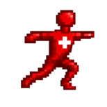

City Running
Road races held in towns and cities, suitable for runners of all experience levels.

Run Switzerland
Find Your Next Challenge
Whether you're preparing for your first race or planning your next marathon, this guide will help you choose a suitable event and understand the different types of races available in Switzerland.
Enter the distance you covered during your Cooper Test (12-minute run). Based on your result, we'll recommend race distances that may be suitable for your current fitness level.
Road races held in towns and cities, suitable for runners of all experience levels.
Events on hiking trails with varied terrain and beautiful scenery.
Challenging races with significant elevation gain and alpine routes.
Combine running with climbing, crawling and strength-based obstacles.
Team events where several runners complete different sections of the course.
Shorter races designed to encourage participation from children and families.
Have a suggestion or know about a race that should be included? We'd love to hear from you.